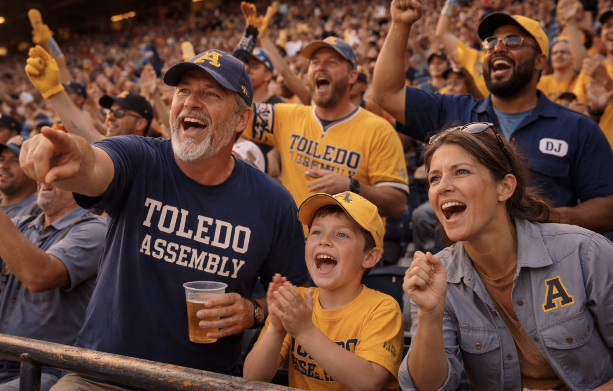
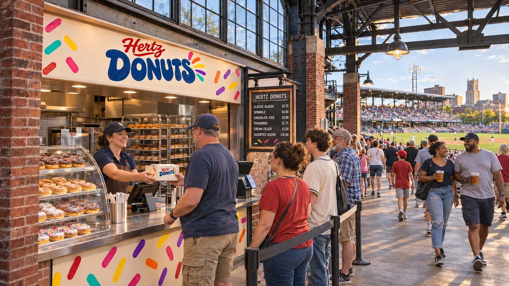
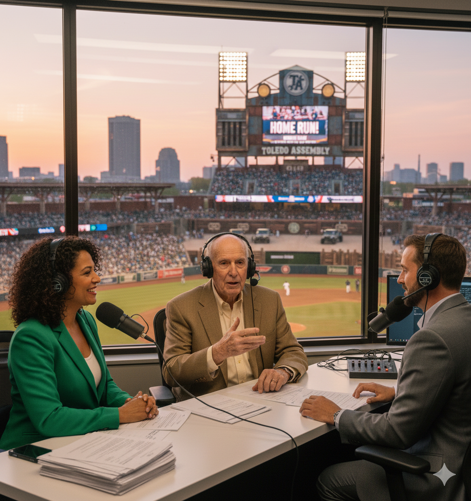
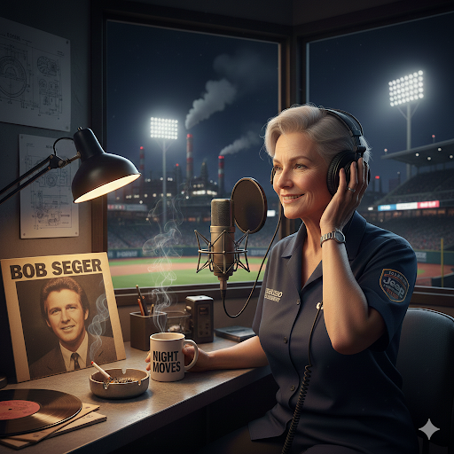
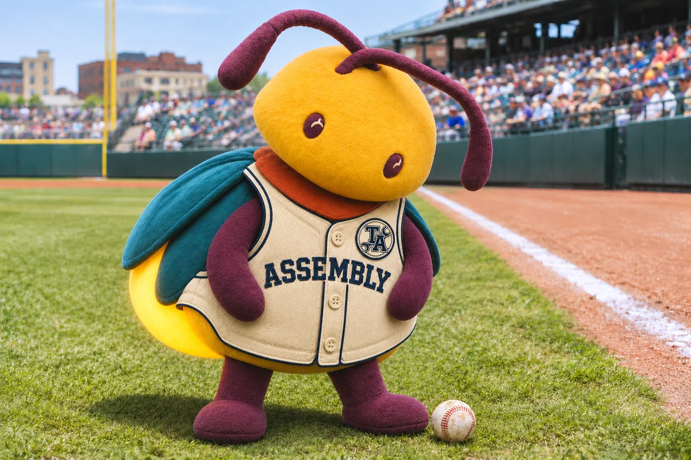

Who’s driving for Toledo?
Name the driver, pick the car and tell us how they got behind the wheel.
Create the driver and car
At Hertz Donuts Park, fans along the River Rail keep their own out-of-town scoreboard. Come early enough and you can help keep score.
Name the driver, pick the car and tell us how they got behind the wheel.
Create the driver and carThe season is complete. Explore and contribute during the offseason.
League standings →Flip a card to see the player’s record. Browse open requests →

A sharp-lined park where sound carries. Bat cracks echo, and crowd noise builds when momentum turns.
Name a feature at Hertz Donuts Park. Where is it, and what do fans get to do there?

Direct, local, unsentimental. A voice to follow the Assembly through every inning.

Clean delivery. No filler. The voice inside Hertz Donuts Park.

The official mascot of the Toledo Assembly.
Between innings, a regular at the River Rail hangs three hand-lettered scorecards over the railing. Fans down the row call out the scores from around the league. Sylvia Marr reads the last one over the PA before the cards come down.
Claim & craft The Pocket Scoreboard →